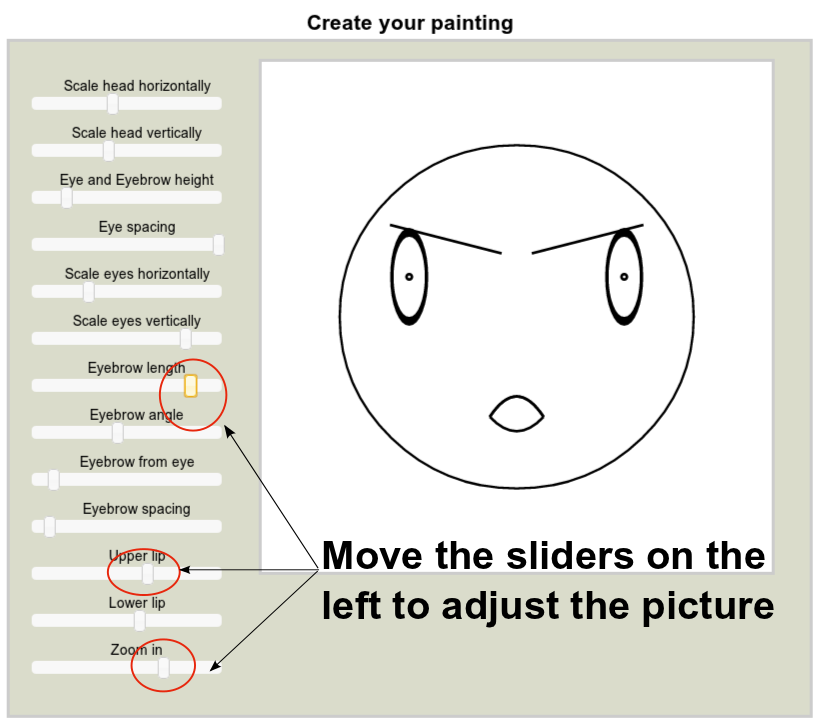
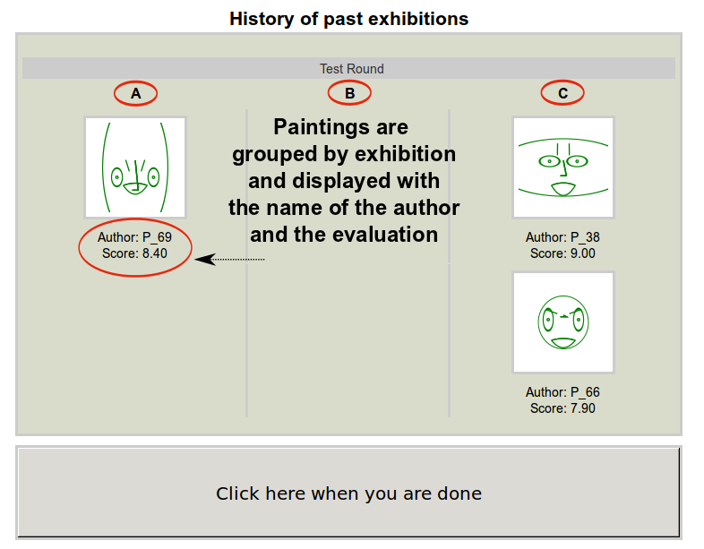
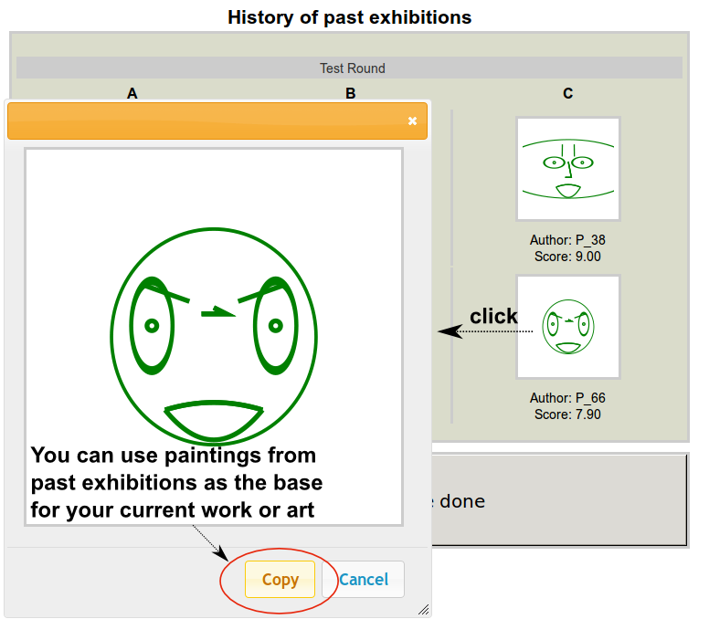
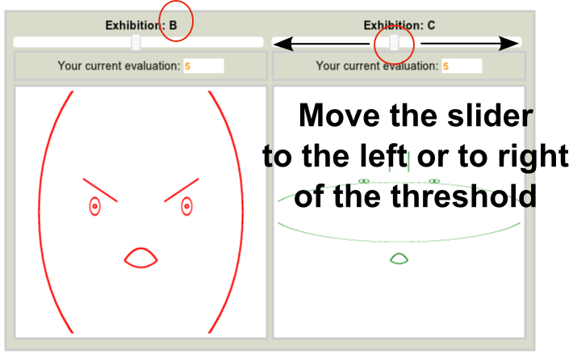

Graphical examples of the interface to create paintings
-
Each player produces his or her paintings by moving a set of sliders as illustrated in the picture below.

-
During the creation of the painting, each player is provided with the an overview of the past exhibitions.

-
Players can click on a painting to display it in its original dimensions. Furthermore, during the creation phase,
it is allowed to select and copy past painting as the base of their new work of art.

-
Players review paintings by selecting a value between 0 and 10 on a slider on top of the pictures.

Proceed to the quiz
If you understood the instructions, click now the "Done Button."